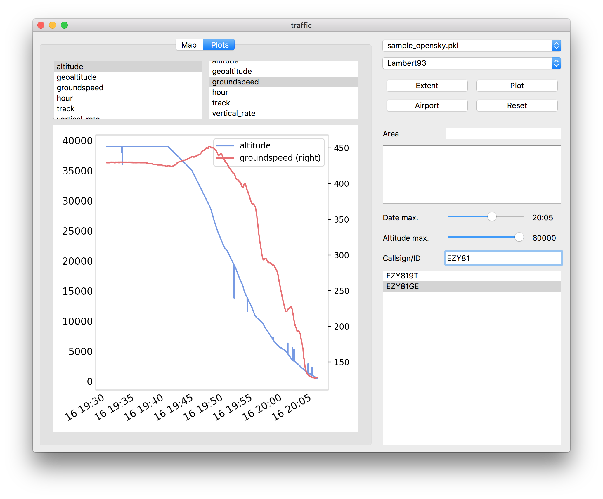
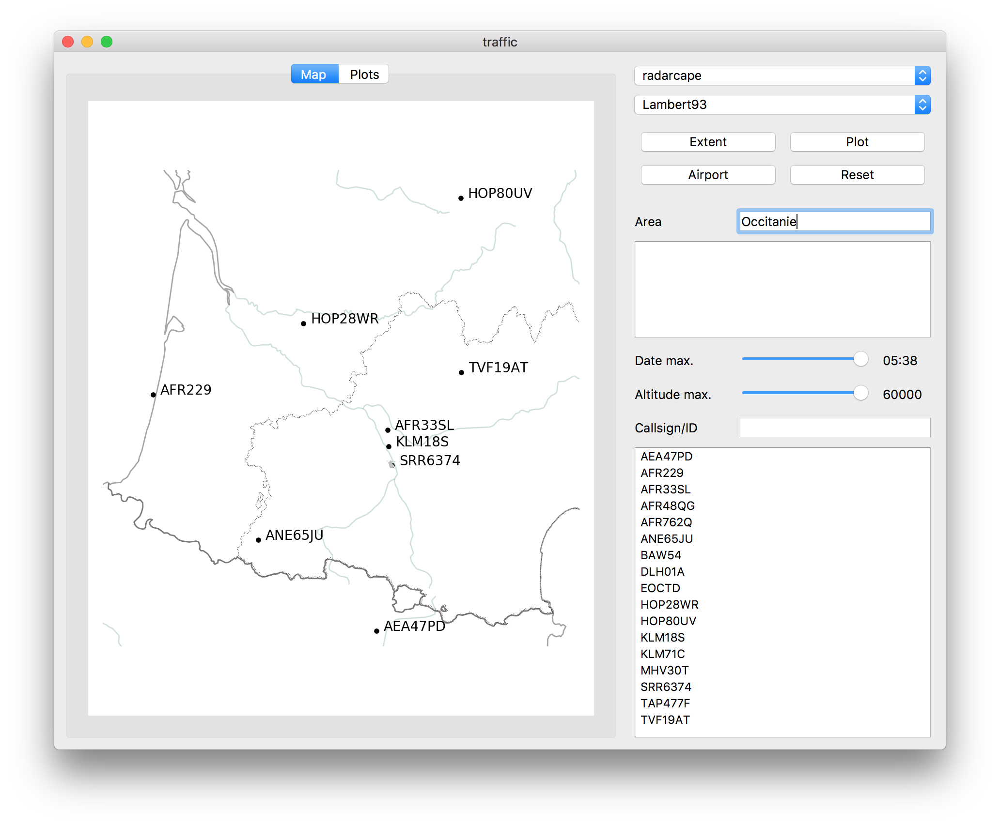
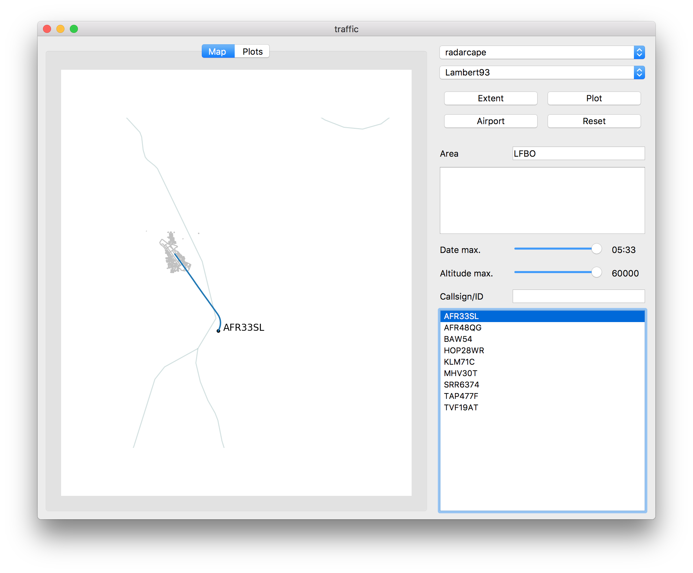
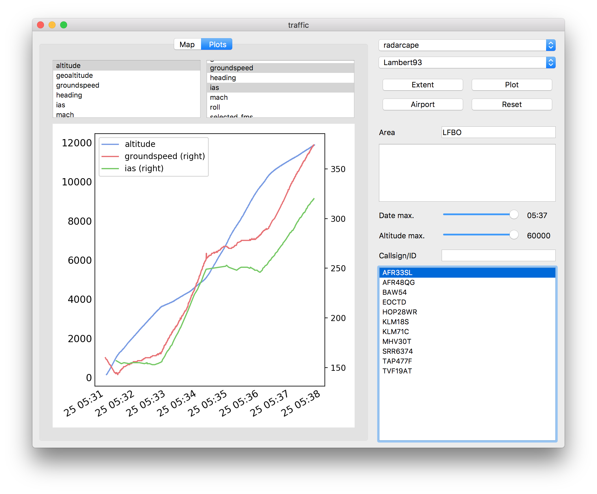
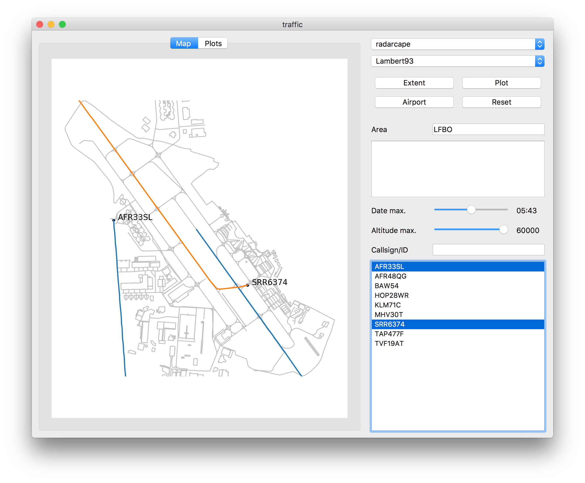
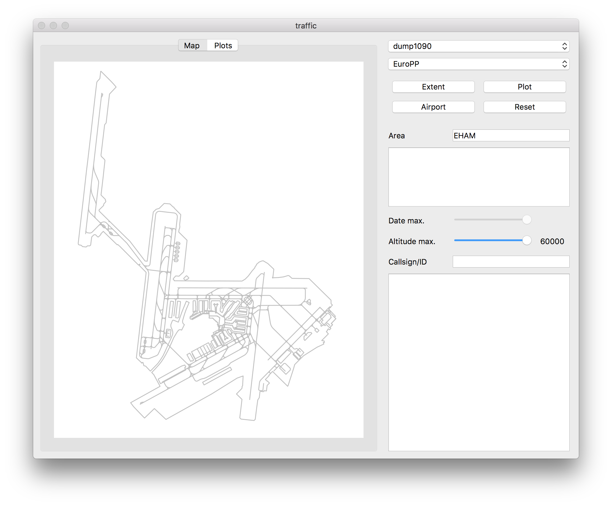

How to use the traffic graphical user interface?
The traffic library comes with a Qt Graphical user interface (GUI) designed to decode and explore historical and live data.
The GUI can be installed as a plugin package and is accessible through the following command (clickable application icons are doable and will probably be automatically generated in future versions)
pip install traffic_qtgui # first install the plugin
traffic gui
The GUI consists of two panes:
the display pane on the left-hand side, with a map and a plots tab;
the command pane on the right-hand side, with selection and filtering buttons.
{kind=link}
By default, the tool opens with a EuroPP projection. Other projections like
Mercator are also available by default: you can customize more projections in
the configuration file, in the [projections] section:
[projections]
default = EuroPP
extra = Lambert93; Amersfoort; GaussKruger
Note
Available projections are default cartopy projections, completed by additional common European projections in the cartes dependency module (here Lambert 93 is the official projection in France, Amersfoort in the Netherlands and Gauss-Krüger in Germany)
Tip
You can implement more projections as plugins.
You can either pan and zoom the map. Zoom is operated by the mouse or trackpad scroll. Note that on MacOS, the trackpad scroll requires clicking.
In order to explore data, click on Open file and select a .pkl file (like
sample_opensky.pkl in the data/ directory) By default, a scatter of all
last recorded points is displayed.
{kind=link}
You may select callsigns in order to plot trajectories.
Date and altitude sliders operate filters on the full pandas DataFrame.
{kind=link}
In the Plots tab, you may select one callsign with different signals (e.g. altitude on the left-hand side and ground speed on the right-hand side) or (exclusive) several callsigns with one signal (e.g. altitude).
{kind=link}
The application does not process raw signals from any 1090 MHz antenna. It relies on other tools and listen to a standard format of raw data broadcasted on specific ports. Specifically, you may run an instance of dump1090 be running with appropriate options:
dump1090 --interactive --net
{kind=link}
Fill in the ICAO (LFPG, PHNL, RJBB, etc.) or IATA (SFO, AMS, HKG, etc.) code of the airport for reference coordinates of the antenna. The associated latitude and longitude coordinates are useful to process ground messages. If several airports are in your neighbourhood, choose any of them (the closest one?)
Tip
If you use a different decoding device like radarcape, data is broadcasted on a different port (usually 10003). You may add the corresponding address (with airport) in your configuration file: this will add an option in the dropdown menu.
[decoders]
radarcape = xxx.xxx.xxx.xxx:10003/LFBO
{kind=link}
For more details on your map, you may enter a name in the Area field and click Plot. The corresponding boundaries will be downloaded from OpenStreetMap servers and added to the map.
{kind=link}
This also work with airports: enter the ICAO or IATA code in the Area field and click Airport. Data is downloaded (and cached) from OpenStreetMap servers.
You can then select a callsign and follow its trajectory:
{kind=link}
The second tab lets you plot other details of the trajectory for different signals: altitude shows the climbing profile. Indicated Airspeed (IAS) is plotted here to reflect the 250 knots limit under 10,000 ft.
{kind=link}
You can automatically zoom to a geographical location by clicking Extent and observe ground movements on the airfield:
{kind=link}
If you are closer to bigger airport with a good reception (from the rooftop viewing area), you may have fun looking at aircraft ground movements from your application.
{kind=link}
When it decodes data, the GUI also writes a CSV text file in your home directory. The first column in the file is a GPS timestamp (nanosecond precision) and the second column the raw message.
$ head ADSB_EHS_RAW_20190225_dump1090.csv
1551072485.607867,1a331339643b50b639903907fbc154da992c5cff2dbf13
1551072485.609867,1a3313396459d5173a903907fbc254000016c354424d11
1551072485.614405,1a331339649f1359418d45ce4699907294c83c1b5b7b99
1551072485.647058,1a33133966915136258dab120b58d302fde3ffc1da0aab
1551072485.725486,1a3313396b3e07ea38903907dbc23400000536e52a12b6
After you close the GUI, you can decode the .pkl file for an offline exploration of the data:
traffic decode ADSB_EHS_RAW_20190225_dump1090.csv LFBO